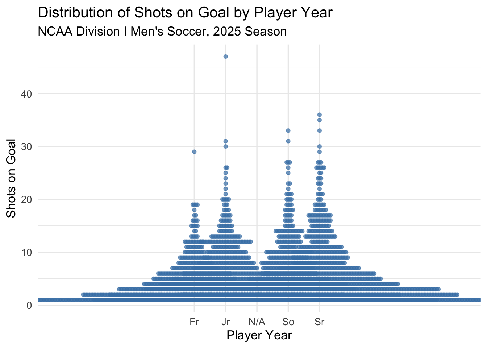
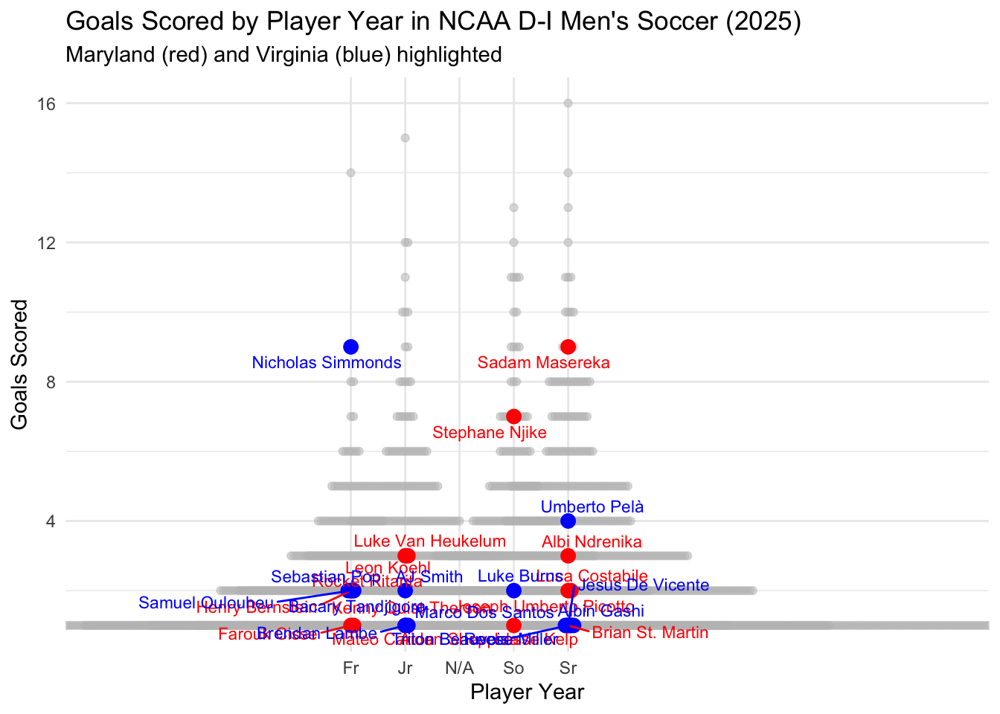

Experience Over Everything: Does Seasoned Shooting Set Players Apart?
Author
Tahlia Williams
Published
November 12, 2025
Maryland Men’s Soccer: The Experience Edge in Scoring
Maryland’s men’s soccer team this season, has been a powerhouse in college soccer, ranking in the nation’s top programs. One key factor they are known for, is the depth of their roster. In this post, we’ll explore how Maryland’s players stack up in terms of scoring efficiency, focusing on goals scored, and compare them to the broader NCAA Division I league. Using data from the 2025 season, we can visualize the distribution of goals by player year across all D-I teams, and focus on Maryland and Virginia to see how experience translates to offensive output.
Data and Methodology
I pulled player statistics from the NCAA men’s soccer dataset from the 2025 season. In order to focus in active and impactful platers, I filtered for players with atleast one shot on goal. For the plot, I placed goals schored on the y axis, because it directly measures offensive contribution of goals by player, allowing us to see clustering and outliers.
Maryland’s players in red for emphasis, with Virginia added, who is also a top program, in blue to provide context.
Code
library(tidyverse)
── Attaching core tidyverse packages ──────────────────────── tidyverse 2.0.0 ──
✔ dplyr 1.1.4 ✔ readr 2.1.5
✔ forcats 1.0.0 ✔ stringr 1.5.2
✔ ggplot2 3.5.2 ✔ tibble 3.3.0
✔ lubridate 1.9.4 ✔ tidyr 1.3.1
✔ purrr 1.1.0
── Conflicts ────────────────────────────────────────── tidyverse_conflicts() ──
✖ dplyr::filter() masks stats::filter()
✖ dplyr::lag() masks stats::lag()
ℹ Use the conflicted package (<http://conflicted.r-lib.org/>) to force all conflicts to become errors
Code
library(janitor)
Attaching package: 'janitor'
The following objects are masked from 'package:stats':
chisq.test, fisher.test
Rows: 5250 Columns: 24
── Column specification ────────────────────────────────────────────────────────
Delimiter: ","
chr (7): team, full_name, roster_name, first_name, last_name, yr, pos
dbl (16): season, team_id, number, ht, gp, gs, goals, assists, sh_att, so_g,...
lgl (1): corners
ℹ Use `spec()` to retrieve the full column specification for this data.
ℹ Specify the column types or set `show_col_types = FALSE` to quiet this message.
Code
active_scorers <- players |>filter(so_g >0)maryland <- active_scorers |>filter(team =="Maryland Terrapins, Terps")shooters <- active_scorers |>filter(so_g >=5)virginia <- active_scorers |>filter(team =="Virginia Cavaliers")ggplot(active_scorers, aes(x = yr, y = so_g)) +geom_beeswarm(color ="steelblue", alpha =0.7) +labs(title ="Distribution of Shots on Goal by Player Year",subtitle ="NCAA Division I Men's Soccer, 2025 Season",x ="Player Year",y ="Shots on Goal" ) +theme_minimal(base_size =13)

Shot Totals Show No Clear Link to Experience
The graph shows that shots on goal are fairly evently distributed among freshman, sohpmores, juniors, and seniors during the 2025 NCAA Division I Men’s Soccer season. While most players record fewer than 10 shots, outliers in each c;ass take a higher number of shots, representing top offensive players. However, there doesn’t appear to be a clear correlation between player year and shot volume.
Code
ggplot() +geom_beeswarm(data = active_scorers, aes(x = yr, y = goals), color ="grey", alpha =0.5) +geom_beeswarm(data = maryland, aes(x = yr, y = goals), color ="red", size =3) +geom_beeswarm(data = virginia, aes(x = yr, y = goals), color ="blue", size =3) +geom_text_repel(data = maryland, aes(x = yr, y = goals, label = full_name), color ="red", size =3) +geom_text_repel(data = virginia, aes(x = yr, y = goals, label = full_name), color ="blue", size =3) +labs(title ="Goals Scored by Player Year in NCAA D-I Men's Soccer (2025)",subtitle ="Maryland (red) and Virginia (blue) highlighted",x ="Player Year",y ="Goals Scored") +theme_minimal()
Warning: Removed 1418 rows containing missing values or values outside the scale range
(`geom_point()`).
Warning: Removed 4 rows containing missing values or values outside the scale range
(`geom_point()`).
Warning: Removed 5 rows containing missing values or values outside the scale range
(`geom_point()`).
Warning: Removed 4 rows containing missing values or values outside the scale range
(`geom_text_repel()`).
Warning: Removed 5 rows containing missing values or values outside the scale range
(`geom_text_repel()`).

The Beeswarm Plot: Experience and Goals
This chart shows that goal scoring in NCAA Division I Men’s Soccer is concentrated among a few standout players, regardless of class year. Maryland’s leading scorers, highlighted in red, tend to be upperclassmen, while Virginia’s, shown in blue, are more evently distributed across player years. However, both programs have several players contributing between four and eight goals.